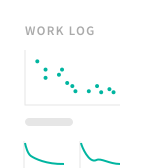
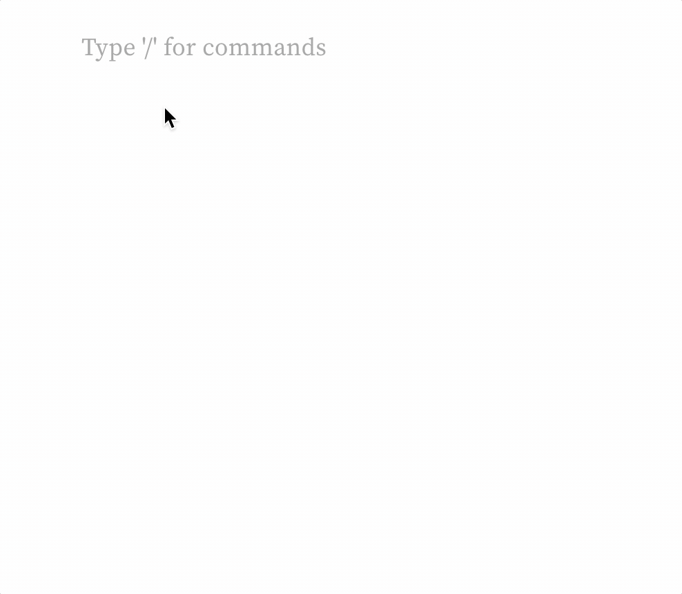
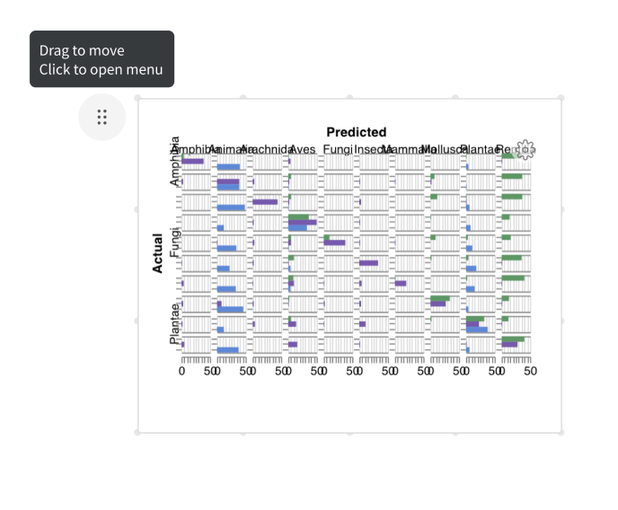

Autosaved
Edits visible only to you
Getting started with Reports
Use Cases
Quick Tips
Examples
You can use Reports however you like. Here are a few examples:

Featured Reports
Go to Fully Connected →Check out how others are using reports:
Quick Tips
Adding text, images, and more
Type "/" to add text, panel grids, images, and more.
Move, duplicate, or delete a panel grid
To move a panel grid, grab the drag handle to the left of the panel. To duplicate or delete, click the drag handle to see options.
Sharing
Want others to see your report? Click the lock icon beside your Projects name in the navbar to make it public.
Untitled Report
Add a description...
Section 1
Run set
1